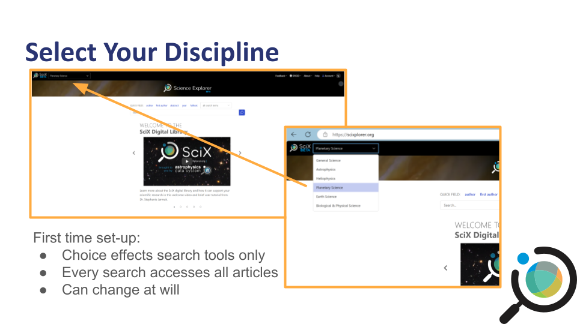
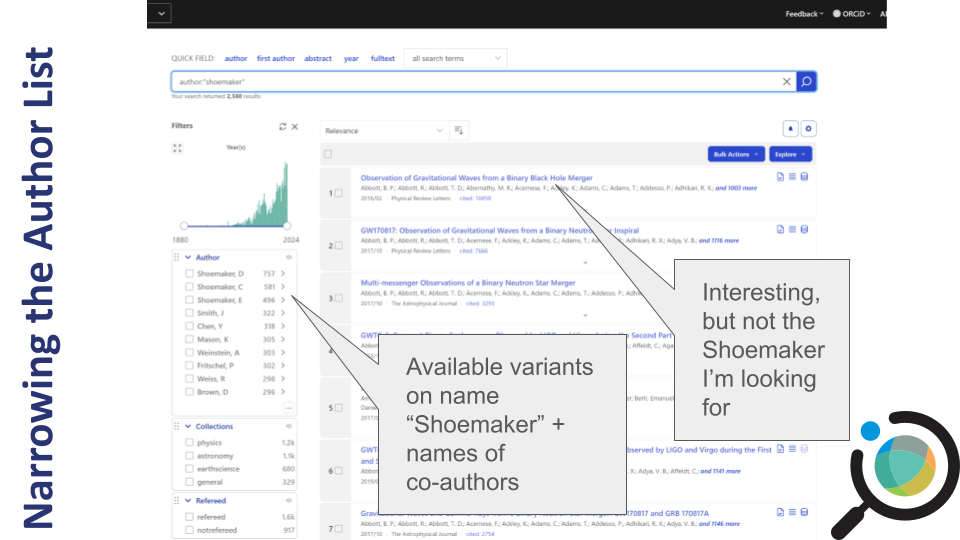
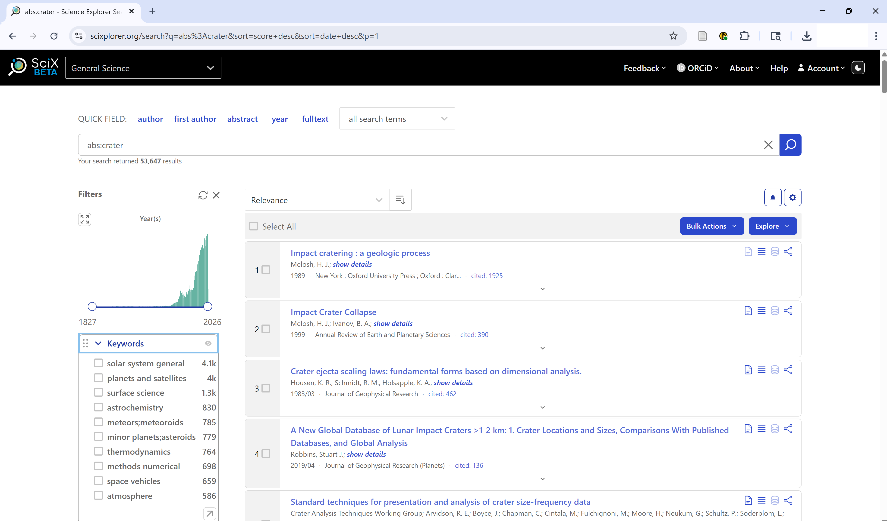
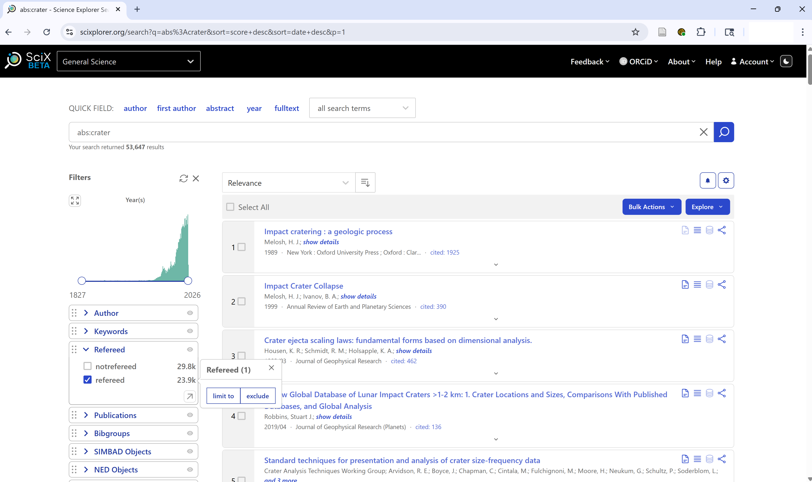
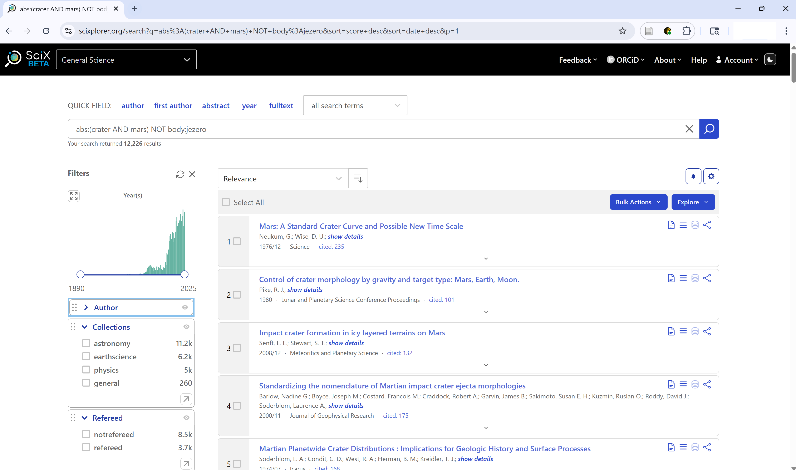

Image 1 of 1: ‘Screenshot of the SciX homepage showing the main search bar and navigation options’
Screenshot of the SciX homepage
Figure 2
Image 1 of 1: ‘Dropdown menu for selecting a discipline in SciX, such as Planetary Science’

Dropdown menu showing discipline selection
options
Figure 3
Image 1 of 1: ‘Help carousel on the SciX homepage showing navigation arrows and learning resources’
Quick Help
Figure 4
Image 1 of 1: ‘SciX homepage with the Help button highlighted in the top-right corner’
SciX help carousel with a Help button in the top
right
Figure 5
Image 1 of 1: ‘Highlighted search bar on the SciX homepage for entering search terms’
Main search bar highlighted on the SciX
homepage
Figure 6
Image 1 of 1: ‘Author field selected in the SciX search bar’
Starting an author search
Figure 7
Image 1 of 1: ‘Search results initiated for author name "Shoemaker"’
Searching on author name Shoemaker
Figure 8
Image 1 of 1: ‘Search results view showing 2,560 items for "Shoemaker"’
Results for Gene Shoemaker
Figure 9
Image 1 of 1: ‘List of search results showing article titles, author names, dates, and icons for full-text, references, and datasets’
Article results view in SciX
Figure 10
Image 1 of 1: ‘Results view with callouts showing what is available when paper, references or citations, or data icons are clicked’
Article results view in SciX with callouts
showing resources available if paper, references or citations, or data
icons are clicked
Figure 11
Image 1 of 1: ‘Author facet sidebar showing Shoemaker variants and frequent collaborators’

The Author facet in SciX shows variants of
“Shoemaker” along with frequent co-authors, allowing the user to refine
results to the correct individual.
Figure 12
Image 1 of 1: ‘SciX sidebar facet showing a list of institutions such as Lowell Observatory with checkboxes to include or exclude them from results’
Institutions facet in SciX
Figure 13
Image 1 of 1: ‘Date range slider with adjustable endpoints and expand icon in SciX facet panel’
Date range slider controls in SciX
Figure 14
Image 1 of 1: ‘SciX main search terms with "all search terms" menu extended; abs search is highlighted and explained’
Return to the SciX main search page. Use the “all search terms”
dropdown menu to start a keyword search for ‘crater.’
Figure 15
Image 1 of 1: ‘SciX results view showing 8,901 items for "Crater"’
Results for Keyword crater
Figure 16
Image 1 of 1: ‘SciX results view of search for exact match keyword crater’
Exact keyword search for crater (synonym
expansion disabled
Figure 17
Image 1 of 1: ‘SciX results view with Keywords facet open and arrow to access enhanced search panel highlighted’
SciX Keywords facet for search refinement
Figure 18
Image 1 of 1: ‘SciX Keywords facet search panel showing search for terms begining with ‘sh’’
{alt=‘SciX
Keywords facet search panel with results of search for keywords begining
with ’sh’ sorted by frequency’}
Figure 19
Image 1 of 1: ‘SciX results view from abs:crater search’

SciX Results view showing search panel for
abs:crater
Figure 20
Image 1 of 1: ‘SciX results view including Refereed facet panel with checkboxes refereed and non-refereed papers’

SciX Refereed facet in results sidebar
Figure 21
Image 1 of 1: ‘SciX Results View with Publication Type facet open displaying article and non-article types available’
SciX Publication Type facet grouped by article
and non-article
Figure 22
Image 1 of 1: ‘SciX results view for complex search of article text’
{alt=‘SciX
results from complex search shwon in bar as ’abs:(crater AND mars) NOT
body:jezero’}
Figure 23
Image 1 of 1: ‘SciX main abstract page showing detailed metadata and icons for open access versions and datasets; image is annotated to highlight features’
SciX main abstract view annotated to show
bibliographic information plus links to open access versions and
datasets
Figure 24
Image 1 of 1: ‘List of papers cited by main paper shown from within SciX abstract view with basic metadata plus annotatons highlighting features of this view’
Citation list available in SciX abstract
view
Figure 25
Image 1 of 1: ‘Bar graph and numerical citation data for the paper shown from within SciX abstract view plus annotatons highlighting features of this view’
Metric data visualized within SciX abstract
view
Figure 26
Image 1 of 1: ‘Export citation tools showcasing BibteX option available from within SciX abstract view plus annotatons highlighting features of this view’
Export citation tools available within SciX
abstract view


 {alt=‘SciX
Keywords facet search panel with results of search for keywords begining
with ’sh’ sorted by frequency’}
{alt=‘SciX
Keywords facet search panel with results of search for keywords begining
with ’sh’ sorted by frequency’}